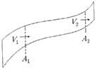
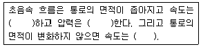
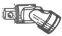
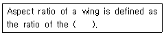
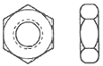
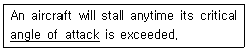
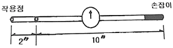
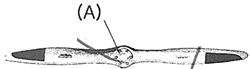

항공기관정비기능사 (2015-10-10 기출문제)
1과목: 비행원리
1. 비행기의 착륙거리를 짧게 하기 위한 조건으로 가장 거리가 먼 것은?
- 접지속도를 크게 한다.
- 착륙 시 무게를 가볍게 한다.
- 착륙 활주 중 양력을 작게 한다.
- 착륙 활주 중 항력을 크게 한다.
(정답률: 77%)

2. 가로축은 비행기 주날개 방향의 축을 가리키며 Y축이라 하는데, 이 축에 관한 모멘트를 무엇이라 하는가?
- 선회 모멘트
- 키놀이 모멘트
- 빗놀이 모멘트
- 옆놀이 모멘트
(정답률: 77%)
3. 비행기의 날개끝 실속(Tip stall)을 방지하기 위한 방법으로 틀린 것은?
- 날개의 테이퍼 비를 크게 한다.
- 날개끝 받음각이 날개뿌리 받음각보다 작아지도록 기하학적 비틀림을 준다.
- 날개끝 부분의 날개 앞전 안쪽에 슬롯을 설치한다.
- 날개 끝에 캠버나 두깨비가 큰 날개골을 사용한다.
(정답률: 51%)
4. 평균 캠버선으로부터 시위선까지의 거리가 가장 먼 곳을 무엇이라 하는가?
- 캠버
- 최대 캠버
- 두께
- 평균시위
(정답률: 85%)
5. 정적안정과 동적안정에 대한 설명으로 옳은 것은?
- 동적안정이 양(+)이면 정적안정은 반드시 양(+)이다.
- 정적안정이 음(-)이면 동적안정은 반드시 양(+)이다.
- 정적안정이 양(+)이면 동적안정은 반드시 양(+)이다.
- 동적안정이 음(-)이면 정적안정은 반드시 음(-)이다.
(정답률: 69%)
6. 비행기의 속도가 200km/h 이며 상승각이 6°라면 상승률은 약 몇m/s인가?
- 5.8
- 18.7
- 20.9
- 60.2
(정답률: 44%)
7. 비행기가 항력을 이기고 앞으로 움직이기 위한 동력은? (단, T 추력, V 비행기 속도이다.)(다)
- T/V
- V/T
- TV
- TV/2
(정답률: 82%)
8. 압력의 변화에 관계없이 밀도가 일정한 유체를 무엇이라 하는가?
- 항밀도 유체
- 점성유체
- 비점성 유체
- 비압축성 유체
(정답률: 76%)
9. 그림과 같은 유체흐름에서 A1지점의 단면적은 32m2이고, A2지점의 단면적은 8m2 이다. 이때 A1 지점의 속도는 10m/s일 때, A2지점의 속도는 몇 m/s인가? (단, 각 지점의 유체밀도는 같다.)

- 8
- 10
- 32
- 40
(정답률: 75%)
10. 날개의 뒷전에 출발 와류가 생기게 되면 앞전 주위에도 이것과 크기가 같고 방향이 반대인 와류가 생기는데 이것을 무엇이라 하는가?
- 말굽형 와류
- 속박와류
- 날개 끝 와류
- 유도 와류
(정답률: 75%)
11. 비행기의 동적 가로안정의 특성과 가장 관계가 먼 것은?
- 방향 불안정
- 더치롤
- 세로 불안정
- 나선 불안정
(정답률: 65%)
12. 다음 중 기하학적으로 날개의 가로안정에 가장 중요한 영향을 미치는 요소는?
- 가로세로비
- 상반각
- 수평안정판
- 승강키
(정답률: 56%)
13. 다음 ( ) 안에 알맞은 말을 순서대로 나열한 것은?

- 증가 –감소 – 감소한다.
- 감소 –증가 – 증가한다.
- 감소 – 증가 –변화하지 않는다.
- 증가 – 감소 – 변화하지 않는다.
(정답률: 74%)
14. 헬리콥터에서 페더링(Feathering) 운동은 1차적으로 어떤 각을 변화 시키는가?
- 원추각
- 코닝각
- 받음각
- 피치각
(정답률: 67%)
15. 회전익 항공기에서 자동회전(autorotation)이란?
- 꼬리 회전날개에 의해 항공기의 방향조종을 하는 것이다.
- 주 회전날개의 반작용 토크의 의해 항공기의 기체가 자동적으로 회전하려는 경향이다.
- 회전날개의 축에 토크가 작용하지 않는 상태에서도 일정한 회전수를 유지하는 것이다.
- 전진하는 깃(blade)과 후퇴하는 깃의 양력차이에 의하여 항공기 자세의 불균형이 생기는 것이다.
(정답률: 71%)
16. 한쪽 방향으로만 움직이고 반대쪽 방향은 로크(LOCK)되며 오프셋 박스렌치를 사용하는 것보다 작용속도가 빠른 공구의 명칭은?
- 로크렌치
- 소켓렌치
- 조절렌치
- 래치팅 박스-엔드 렌치
(정답률: 75%)
17. 다음 중 자분탐상 검사의 특징이 아닌 것은?
- 강자성체의 적용된다
- 자동화 검사가 가능하다.
- 표면 결함 탑지에 사용된다.
- 검사원의 높은 숙련도가 필요 없다.
(정답률: 64%)
18. 정밀공차 볼트의 식별을 용이하게 하기 위하여 볼트머리에 표시하는 기호는?
- 삼각형
- 일자형
- 원형
- 사각형
(정답률: 78%)
19. 금속표면을 도장 작업하기 전에 적절한 전처리작업을 하여 금속표면과 도료의 마감칠(Top coats)사이에 접착성을 높이기 위한 도료는?
- 아크릴 래커
- 프라이머
- 합성 에나멜
- 폴리우레탄
(정답률: 65%)
20. 좁은 공간의 작업 시 굴곡이 필요한 경우에 스피드핸들, 소켓 또는 익스텐션바와 함께 사용하는 그림과 같은 공구는?

- 익스텐션 댐퍼
- 어댑터
- 유니버셜 조인트
- 크로풋
(정답률: 86%)
2과목: 항공기정비
21. 유리섬유와 수지를 반복해서 겹쳐놓고 가열장치나 오토 클레이브 안에 그것을 넣고 열과 압력으로 경화시켜 복합소재를 제작하는 방법은?
- 유리섬유적층방식
- 압축주형방식
- 필라멘트권선방식
- 습식적층방식
(정답률: 81%)
22. 다음 중 녹색의 안전색체 표시를 해야 하는 공항시설물과 각종 장비는?
- 보일러
- 전원 스위치
- 응급처치장비
- 소화기 및 화재경보장치
(정답률: 91%)
23. 특수공정 부품 중 정비와 검사를 목적으로 쉽고 신속하게 점검창을 장탈·착 할 수 있도록 만들어진 부품은?
- 조 볼트
- 블라인드 리벳
- 테이퍼 로크
- 턴로크 패스너
(정답률: 64%)
24. 다음( ) 안에 알맞은 내용은?

- wing span to the wing root
- wing span to the wing span
- wing span to the mean chord
- square of the chord to the wing span
(정답률: 62%)
25. 항공기 정비 용어 중 MEL의 의미로 옳은 것은?
- 기관고장항목(Missing Engine List)
- 장비고장항목(Missing Equipment List)
- 최소점검기관목록(Minimum Engine List)
- 최소구비장비목록(Minimum Equipment List)
(정답률: 73%)
26. 다음 중 항공기의 지상취급작업에 속하지 않는 것은?
- 견인작업
- 세척작업
- 계류작업
- 지상 유도작업
(정답률: 69%)
27. 그림과 같은 종류의 너트 명칭은?

- 캐슬너트
- 평너트
- 체크너트
- 캐슬전단너트
(정답률: 63%)
28. 밑줄친 부분을 의미하는 단어는?

- 받음각
- 실속각
- 스핀각
- 공격각
(정답률: 84%)
29. 항공기 정비와 관련된 용어를 설명한 것으로 옳은 것은?
- 사용 시간 한계를 정해놓은 것을 하드타임이라 한다.
- 항공기 기관이 작동하면서부터 멈출 때까지의 총 시간을 항공기의 비행시간이라 한다.
- 항공기의 부품 또는 구성품이 목적한 기능을 상실하는 것을 결함이라 한다.
- 항공기의 구성품 또는 부품 고장으로 계통이 비정상적으로 작동하는 상태를 기능불량이라 한다.
(정답률: 62%)
30. 측정물이 평면 상태검사, 원통 진원검사 등에 이용되는 측정기기?
- 높이게이지
- 마이크로미터
- 깊이게이지
- 다이얼게이지
(정답률: 80%)
31. 주변의 산소농도를 묽게 하는 효과로 화재의 전반에 걸쳐 사용할 수 있으며 화재 진압 후 2차 피해가 우려될 때 사용 할 수 있는 소화기는?
- 할론 소화기
- CO2 소화기
- 포말 소화기
- CBM 소화기
(정답률: 61%)
32. 항공기 급유 시 3점 접지를 해야 하는 주된 이유는?
- 연료와 급유관과의 마찰에 의한 열방지
- 연료와 급유관과의 제한 범위 이탈방지
- 연료와 급유관과의 상대운동의 진동방지
- 연료와 급유관과의 마찰에 의한 정전기방지
(정답률: 88%)
33. 다음 중에서 부품의 불연속의 찾아내는 방법으로서 고주파 음속 파장을 사용하는 비파괴검사는?
- 자기탐상검사
- 초음파탐상검사
- 형광침투탐상검사
- 와전류탐상검사
(정답률: 84%)
34. 고압가스 취급시 주의할 사항 중 틀린 것은?
- 충전용기는 직사광선을 받지 않도록 조치한다.
- 충전용기와 잔가스용기는 구분없이 같이 보관한다.
- 비어 있는 용기라도 충격을 받지 않도록 주의한다.
- 용기보관장소에는 작업에 필요한 물건 외에는 두지 않는다.
(정답률: 91%)
35. 길이가 10inch 인 토크렌치와 길이가 2inch 인 어댑터를 직선으로 연결하여 볼트를 252in-lbs로 조이려고 한다면 토크렌치에 지시되어야 할 토크값은 몇 in-lbs 인가?

- 150
- 180
- 210
- 220
(정답률: 70%)
36. 축류식 압축기의 실속방지 구조가 아닌 것은?
- 쉬라우드
- 가변 안내깃
- 가변 고정자깃
- 블리드 밸브
(정답률: 63%)
37. 세계 최초로 민간 항공용 운송기에 장착하여 운항한 가스터빈기관은?
- 터보프롭기관
- 터보팬기관
- 터보샤프트기관
- 터보제트기관
(정답률: 54%)
38. 다음 중 항공용 윤활유의 점도 측정에 사용하는 것은?
- CFR 점도계
- 맴돌이 점도계
- 레이드 증기 점도계
- 세이볼트 유니버셜 점도계
(정답률: 51%)
39. 항공기용 왕복기관의 공기덕트 구성품이 아닌 것은?
- 공기 여과기
- 다이내믹 댐퍼
- 기화기 공기히터
- 알터네이트 공기밸브
(정답률: 73%)
40. 가스터빈기관 애뉼러형 연소실의 구성요소가 아닌 것은?
- 연소실 라이너
- 이그나이터
- 바깥쪽 케이스
- 화염 전파관
(정답률: 61%)
3과목: 항공기관
41. 항공기가 강하 또는 착륙(Let Down or Landing)시 수동 혼합 조종 장치의 위치는?
- 희박(Lean) 위치
- 최대 농후(Full Rich) 위치
- 외기 온도에 따라 수동 혼합 조종 장치의 위치를 변화시킨다.
- 외기 습도에 따라 수동 혼합 조종 장치의 위치를 변화시킨다.
(정답률: 68%)
42. 왕복기관에서 발생하는 비정상 작동이 아닌 것은?
- 디토네이션(Detonation)
- 조기 점화(Pre-Ignition)
- 후기 연소(After Firing)
- 엔진 스톨(Engine Stall)
(정답률: 60%)
43. 다음 중 열기관의 이론 열효율을 구하는 식으로 옳은 것은?
- 공급 압력 ÷ 유효 압력
- 유효한 체적 ÷ 공급된 일
- 유효한 일 ÷ 공급된 열량
- 유효한 압력 ÷ 공급된 압력
(정답률: 64%)
44. 가스터빈기관의 교류 점화계통에 사용되는 전원의 주파수(Hz)로 옳은 것은?
- 300
- 400
- 500
- 600
(정답률: 75%)
45. 실린더의 안지름이 15.0cm, 행정거리가 0.155m, 실린더 수가 4개인 기관의 총 행정체적은 약 몇 cm3인가?
- 730
- 2737
- 10956
- 16426
(정답률: 60%)
46. 다음 중 가스터빈기관의 연료계통에 관련된 용어가 아닌 것은?
- PLA(Power Lever Angle)
- FMU(Fuel Merering Unit)
- TCC(Turbine Case Cooling)
- FADEC(Fuel Authority Data Electronic Control)
(정답률: 55%)
47. 가스터빈기관에서 배기가스 소음을 줄이는 방법으로 틀린 것은?
- 배기가스의 상대속도를 줄여준다.
- 배기가스가 대기와 혼합되는 면적을 넓게 한다.
- 배기소음의 고주파수를 저주파수로 바꿔준다.
- 다로브(Milti Lobed)형의 배기관을 장착한다.
(정답률: 68%)
48. 항공기 연료 조절 장치에서 수감하는 기관의 주요 작동 변수가 아닌 것은?
- 기관회전수
- 연료유량
- 압축기출구압력
- 압축기입구온도
(정답률: 57%)
49. 다음 중 반동도가 “0” 이며 가스의 팽창은 터빈 스테이터에서만 이루어지고 로터 깃에서는 팽창이 이루어지지 않는 축류 터빈 로터는?
- 반동 터빈
- 충동 터빈
- 반동-충동 터빈
- 레디얼 플로우 터빈
(정답률: 57%)
50. “에너지는 여러 가지 형태로 변환이 가능하나, 절대적인 양은 일정하다.” 라는 내용은 어떤 법칙을 설명하고 있는가?
- 뉴튼의 제1법칙
- 열역학 제0법칙
- 열역학 제1법칙
- 열역학 제2법칙
(정답률: 70%)
51. 다음 중 후기연소기의 구성에 포합되지 않는 것은?
- 배기노즐
- 화염 유지기
- 연료분무막대
- 예열 플러그
(정답률: 61%)
52. 왕복기관의 냉각에 주로 사용되는 공랭식 기관의 구조에 해당되지 않는 것은?
- 배플
- 카울플랩
- 냉각핀
- 공기덕트
(정답률: 60%)
53. 그림과 같은 고정 피치 프로펠러에서 (A) 의 명칭은?

- 팁
- 목
- 허브
- 깃
(정답률: 84%)
54. 가스터빈기관의 터빈깃에 직각으로 머리카락의 모양의 형태로 균열이 나타날 때 이 결함의 원인으로 가장 옳은 것은?
- 과부식
- 과하중
- 과냉각
- 열응력
(정답률: 67%)
55. 왕복기관 점화계통에 사용되는 승압코일(Booster Coil)의 목적은?
- 2차 코일에 맥류를 공급한다.
- 기관 시동 시 고압의 불꽃을 발생한다.
- 회전자석 마그네토의 1차 코일에 맥류를 공급한다.
- 브레이커 포인트에 고압 불꽃을 발생하게 한다.
(정답률: 43%)
56. 터보제트기관에서 저발열량이 12000 kcal/kg 인 연료를 1초 동안에 0.13 kg 씩 소모한다고 할 때 추력 비연료 소비율(TSFC)은 약 몇 kg/kg·h인가? (단, 진추력은 6000kg, 비행속도는 200 m/s이다.)
- 0.08
- 0.16
- 0.20
- 0.76
(정답률: 34%)
57. 항공용 왕복기관에서 과급기를 사용하는 주된 목적은?
- 출력 증대
- 냉각 효율 향상
- 연료 소비량 감소
- 기관 구조의 단순화
(정답률: 71%)
58. 밸브 개폐 시기를 나타내는 용어 및 약자에서 “상사점 후”를 나타내는 것은?
- ATC
- BTC
- ABC
- BBC
(정답률: 74%)
59. 왕복기관과 비교한 가스터빈기관의 특성이 아닌 것은?
- 연료의 소모량이 많고 소음이 심하다.
- 회전수에 제한을 받기 때문에 큰 출력을 내기가 어렵다.
- 왕복운동 부분이 없어 기관의 진동이 적다.
- 비행속도가 커질수록 효율이 높아져 초음속 비행도 가능하다
(정답률: 65%)
60. 브레이튼 사이클(Brayton cycle)에 대한 설명으로 옳은 것은?
- 2개의 단열과정과 2개의 정압과정으로 이루어진다.
- 2개의 단열과정과 2개의 정적과정으로 이루어진다.
- 2개의 정압과정과 2개의 정적과정으로 이루어진다.
- 2개의 등온과정과 2개의 정적과정으로 이루어진다.
(정답률: 58%)